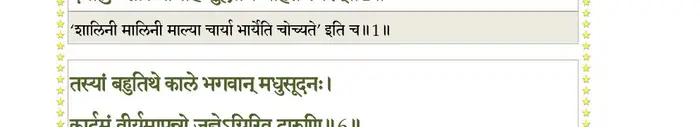
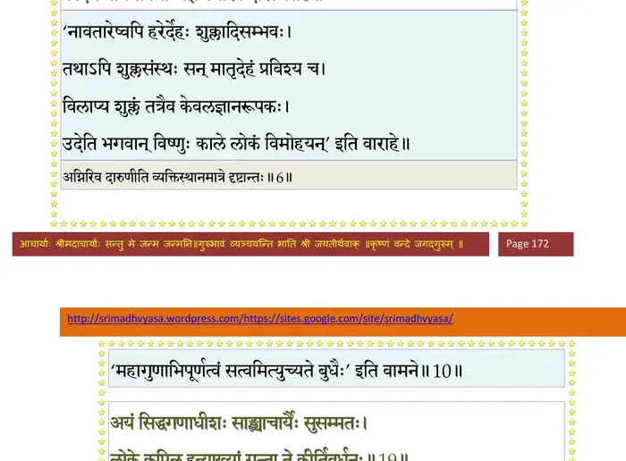
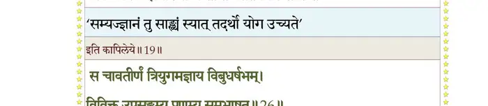
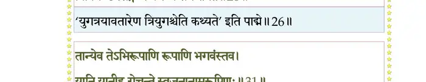
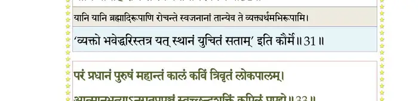
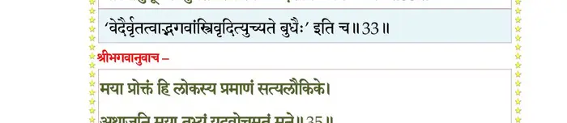
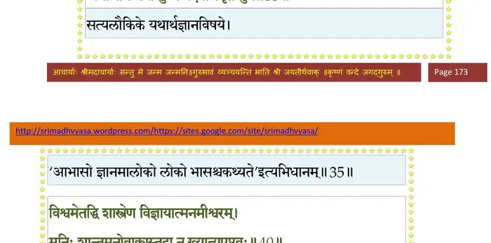
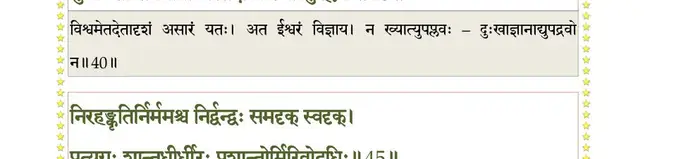
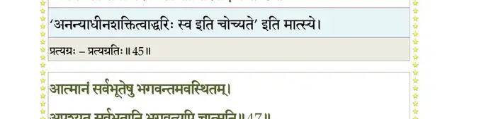
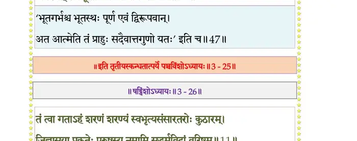

स्कन्ध 3 · अध्याय 25
श्लोक १
मैत्रेय उवाच–
निर्वेदवादिनीमेवं मनोर्दुहितरं मुनिः ।
दयालुः शालिनीमाह शुक्लाभिव्याहृतं स्मरन्।। १ ।।
निर्वेदवादिनीमेवं मनोर्दुहितरं मुनिः ।
दयालुः शालिनीमाह शुक्लाभिव्याहृतं स्मरन्।। १ ।।
भागवततात्पर्यनिर्णय

श्लोक २
ऋषिरुवाच–
मा खिदो राजपुत्रीत्थमात्मानं प््रात्यनिन्दिते ।
भगवांस्तेऽक्षरो गर्भमदूरात् संप््रापत्स्यते।। २ ।।
मा खिदो राजपुत्रीत्थमात्मानं प््रात्यनिन्दिते ।
भगवांस्तेऽक्षरो गर्भमदूरात् संप््रापत्स्यते।। २ ।।
श्लोक ३
धृतव्रता सुभद्रं ते दमेन नियमेन च ।
तपोद्रविणदानैश्च श्रद्धया चेश्वरं भज।। ३ ।।
तपोद्रविणदानैश्च श्रद्धया चेश्वरं भज।। ३ ।।
श्लोक ४
स त्वयाऽऽराधितः शुक्लो वितन्वन् मामकं यशः ।
छेत्ता ते हृदयग्रन्थिमौदर्यो ब्रह्मभावनः।। ४ ।।
छेत्ता ते हृदयग्रन्थिमौदर्यो ब्रह्मभावनः।। ४ ।।
श्लोक ५
मैत्रेय उवाच–
देवहूत्यपि संदेशं गौरवेण प््राजापतेः ।
सम्यक् श्रद्धाय पुरुषं कूटस्थमभजद् गुरुम्।। ५ ।।
देवहूत्यपि संदेशं गौरवेण प््राजापतेः ।
सम्यक् श्रद्धाय पुरुषं कूटस्थमभजद् गुरुम्।। ५ ।।
श्लोक ६
तस्यां बहुतिथे काले भगवान् मधुसूदनः ।
कार्दमं वीर्यमापन्नो जज्ञेऽग्निरिव दारुणि।। ६ ।।
कार्दमं वीर्यमापन्नो जज्ञेऽग्निरिव दारुणि।। ६ ।।
भागवततात्पर्यनिर्णय

श्लोक ७
अवादयंस्तदा व्योमि्न वादित्राणि घनाघनाः ।
गायन्ति तं स्म गन्धर्वा नृत्यन्त्यप्सरसो मुदा।। ७ ।।
गायन्ति तं स्म गन्धर्वा नृत्यन्त्यप्सरसो मुदा।। ७ ।।
श्लोक ८
पेतुः सुमनसो दिव्याः खेचरैरपवर्जिताः ।
प््रासेदुश्च दिशः सर्वा अम्भांसि च मनांसि च।। ८ ।।
प््रासेदुश्च दिशः सर्वा अम्भांसि च मनांसि च।। ८ ।।
श्लोक ९
तत् कर्दमाश्रमपदं सरस्वत्या परिप्लुतम् ।
स्वयम्भूः सार्धमृषिभिर्मरीच्यादिभिरभ्यगात्।। ९ ।।
स्वयम्भूः सार्धमृषिभिर्मरीच्यादिभिरभ्यगात्।। ९ ।।
श्लोक १०
भगवन्तं परं ब्रह्म सत्त्वेनांशेन शत्रुहन् ।
तत्त्वसंख्यानविज्ञप्त्यै जातं विद्वानजः स्वराट्।। १० ।।
तत्त्वसंख्यानविज्ञप्त्यै जातं विद्वानजः स्वराट्।। १० ।।
श्लोक ११
सभाजयन् विशुद्धेन चेतसा तच्चिकीर्षितम् ।
प््राहृष्यमाणैरसुभिः कर्दमं चेदमभ्यधात्।। ११ ।।
प््राहृष्यमाणैरसुभिः कर्दमं चेदमभ्यधात्।। ११ ।।
श्लोक १२
ब्रह्मोवाच–
त्वया मेऽपचितिस्तात कल्पिता निर्व्यलीकतः ।
यन्मे सञ्जगृहे वाक्यं भवान् मानद मानयन्।। १२ ।।
त्वया मेऽपचितिस्तात कल्पिता निर्व्यलीकतः ।
यन्मे सञ्जगृहे वाक्यं भवान् मानद मानयन्।। १२ ।।
श्लोक १३
एतावत्येव शुश्रूषा कार्या पितरि पुत्रकैः ।
बाढमित्यनुमन्येत गौरवेण गुरोर्वचः।। १३ ।।
बाढमित्यनुमन्येत गौरवेण गुरोर्वचः।। १३ ।।
श्लोक १४
इमा दुहितरः सत्यस्तव वत्स सुमध्यमाः ।
सर्गमेताः प््राभावैः स्वैर्बृंहयिष्यन्ति नैकधा।। १४ ।।
सर्गमेताः प््राभावैः स्वैर्बृंहयिष्यन्ति नैकधा।। १४ ।।
श्लोक १५
अतस्त्वमृषिमुख्येभ्यो यथाशीलं यथारुचि ।
आत्मजाः परिदेह्यङ्ग विस्तृणीहि यशो भुवि।। १५ ।।
आत्मजाः परिदेह्यङ्ग विस्तृणीहि यशो भुवि।। १५ ।।
श्लोक १६
वेदाहमाद्यं पुरुषमवतीर्णं स्वमायया ।
भूतानां शेवधिं देहं बिभ्राणं कपिलं मुनिम्।। १६ ।।
भूतानां शेवधिं देहं बिभ्राणं कपिलं मुनिम्।। १६ ।।
श्लोक १७
ज्ञानविज्ञानयोगेन कर्मणामुद्धरंश्च यः ।
हिरण्यकेशः पद्माक्षः पद्ममुद्रापदाम्बुजः।। १७ ।।
हिरण्यकेशः पद्माक्षः पद्ममुद्रापदाम्बुजः।। १७ ।।
श्लोक १८
एष मानवि ते गर्भं प््राविष्टः कैटभार्दनः ।
अविद्यासंशयग्रन्थिं च्छित्त्वा गां विचरिष्यति।। १८ ।।
अविद्यासंशयग्रन्थिं च्छित्त्वा गां विचरिष्यति।। १८ ।।
श्लोक १९
अयं सिद्धगणाधीशः साङ्ख्याचार्यैः सुसम्मतः ।
लोके कपिल इत्याख्यां गन्ता ते कीर्तिवर्धनः।। १९ ।।
लोके कपिल इत्याख्यां गन्ता ते कीर्तिवर्धनः।। १९ ।।
भागवततात्पर्यनिर्णय

श्लोक २०
मैत्रेय उवाच–
तावाश्वास्य जगत्स्रष्टा कुमारैः सहनारदः ।
हंसो हंसेन यानेन स्वधाम प््रात्यपद्यत।। २० ।।
तावाश्वास्य जगत्स्रष्टा कुमारैः सहनारदः ।
हंसो हंसेन यानेन स्वधाम प््रात्यपद्यत।। २० ।।
श्लोक २१
गते शतधृतौ क्षत्तः कर्दमस्तेन चोदितः ।
यथोदितं स्वदुहितॄः प््र•दाद् विश्वसृजां ततः।। २१ ।।
यथोदितं स्वदुहितॄः प््र•दाद् विश्वसृजां ततः।। २१ ।।
श्लोक २२
मरीचये कलां प््र•दादनसूयामथात्रये ।
श्रद्धामङ्गिरसेऽयच्छत् पुलस्त्याय हविर्भुवम्।। २२ ।।
श्रद्धामङ्गिरसेऽयच्छत् पुलस्त्याय हविर्भुवम्।। २२ ।।
श्लोक २३
पुलहाय गतिं युक्तां क्रतवे च क्रियां सतीम् ।
ख्यातिं च भृगवेऽयच्छद् वसिष्ठायाप्यरुन्धतीम्।। २३ ।।
ख्यातिं च भृगवेऽयच्छद् वसिष्ठायाप्यरुन्धतीम्।। २३ ।।
श्लोक २४
अथर्वणेऽददाच्छान्तिं यया यज्ञो वितन्यते ।
विप््रार्षभान् कृतोद्वाहान् सदारान् समलालयत्।। २४ ।।
विप््रार्षभान् कृतोद्वाहान् सदारान् समलालयत्।। २४ ।।
श्लोक २५
ततस्त ऋषयः क्षत्तः कृतदारा निमन्त्र्य तम् ।
प््र•तिष्ठन् नन्दमापन्नाः स्वं स्वमाश्रमण्डलम्।। २५ ।।
प््र•तिष्ठन् नन्दमापन्नाः स्वं स्वमाश्रमण्डलम्।। २५ ।।
श्लोक २६
स चावतीर्णं त्रियुगमाज्ञाय विबुधर्षभम् ।
विविक्त उपसङ्गम्य प््राणम्य समभाषत।। २६ ।।
विविक्त उपसङ्गम्य प््राणम्य समभाषत।। २६ ।।
भागवततात्पर्यनिर्णय

श्लोक २७
अहो पापच्यमानानां निरये स्वैरमङ्गलैः ।
कालेन भूयसा नूनं प््रासीदन्तीह देवताः।। २७ ।।
कालेन भूयसा नूनं प््रासीदन्तीह देवताः।। २७ ।।
श्लोक २८
बहुजन्मविपक्वेन सम्यग् योगसमाधिना ।
द्रष्टुं यतन्ते यतयः शून्यागारेषु यत्पदम्।। २८ ।।
द्रष्टुं यतन्ते यतयः शून्यागारेषु यत्पदम्।। २८ ।।
श्लोक २९
स एव भगवानद्य हेलनं नगणय्य नः ।
गृहेषु जातो ग्राम्याणां यः स्वानां पक्षपोषणः।। २९ ।।
गृहेषु जातो ग्राम्याणां यः स्वानां पक्षपोषणः।। २९ ।।
श्लोक ३०
स्वीयं वाक्यमृतं कर्तुमवतीर्णोऽसि मे गृहे ।
चिकीर्षुर्भगवञ्छर्म भक्तानामभिवर्धनः।। ३० ।।
चिकीर्षुर्भगवञ्छर्म भक्तानामभिवर्धनः।। ३० ।।
श्लोक ३१
तान्येव तेऽभिरूपाणि रूपाणि भगवंस्तव ।
यानि यानीह रोचन्ते स्वजनानामरूपिणः।। ३१ ।।
यानि यानीह रोचन्ते स्वजनानामरूपिणः।। ३१ ।।
भागवततात्पर्यनिर्णय

श्लोक ३२
त्वां सूरिभिस्तत्त्वबुभुत्सयाऽद्धा सदाऽभिवादार्हणपादपीठम् ।
ऐश्वर्यवैराग्ययशोऽवबोधवीर्यश्रिया पूर्णमहं प््रापद्ये।। ३२ ।।
ऐश्वर्यवैराग्ययशोऽवबोधवीर्यश्रिया पूर्णमहं प््रापद्ये।। ३२ ।।
श्लोक ३३
परं प््राधानं पुरुषं महान्तं कालं कविं त्रिवृतं लोकपालम् ।
आत्मानुभूत्याऽनुगतप््रापञ्चं स्वच्छन्दशक्तिं कपिलं प््रापद्ये।। ३३ ।।
आत्मानुभूत्याऽनुगतप््रापञ्चं स्वच्छन्दशक्तिं कपिलं प््रापद्ये।। ३३ ।।
भागवततात्पर्यनिर्णय

श्लोक ३५
तं त्वाऽभिपृच्छेऽद्य पतिं प््राजानां त्वयाऽवतीर्णेन उताप्तकामः ।
परिव्राजां पदवीमास्थितोऽहं चरिष्ये त्वां हृदि युञ्जन् विशोकः।।३४
भगवानुवाच–
मया प््र•ेक्तं हि लोकस्य प््रामाणं सत्यलौकिके ।
अथाजनि मया तुभ्यं यदवोचमृतं मुने।। ३५ ।।
परिव्राजां पदवीमास्थितोऽहं चरिष्ये त्वां हृदि युञ्जन् विशोकः।।३४
भगवानुवाच–
मया प््र•ेक्तं हि लोकस्य प््रामाणं सत्यलौकिके ।
अथाजनि मया तुभ्यं यदवोचमृतं मुने।। ३५ ।।
भागवततात्पर्यनिर्णय

श्लोक ३६
एतन्मे जन्म लोकेऽस्मिन् मुमुक्षूणां दुराशयात् ।
प््रासंख्यानाय तत्त्वानां समत्वायात्मदर्शिनाम्।। ३६ ।।
प््रासंख्यानाय तत्त्वानां समत्वायात्मदर्शिनाम्।। ३६ ।।
श्लोक ३७
एष आत्मपथोऽव्यक्तो नष्टः कालेन भूयसा ।
तं प््रावर्तयितुं देहमिमं विद्धि मया भृतम्।। ३७ ।।
तं प््रावर्तयितुं देहमिमं विद्धि मया भृतम्।। ३७ ।।
श्लोक ३८
गच्छ कामं मयाऽऽपृष्टो मयि संन्यस्तकर्मणा ।
जित्वा सुदुर्जयं मृत्युममृतत्वाय मां भज।। ३८ ।।
जित्वा सुदुर्जयं मृत्युममृतत्वाय मां भज।। ३८ ।।
श्लोक ३९
मामात्मानं स्वयंज्योतिः सर्वभूतगुहाशयम् ।
आत्मन्येवात्मना वीक्ष्य विशोकोऽभयमृच्छसि।। ३९ ।।
आत्मन्येवात्मना वीक्ष्य विशोकोऽभयमृच्छसि।। ३९ ।।
श्लोक ४०
विश्वमेतद्धि शास्त्रेण विज्ञायात्मानमीश्वरम् ।
मुनिः शान्तमनोवाक्यस्तदा नख्यात्युपप्लवः।। ४० ।।
मुनिः शान्तमनोवाक्यस्तदा नख्यात्युपप्लवः।। ४० ।।
भागवततात्पर्यनिर्णय

श्लोक ४१
मात्र आध्यात्मिकीं विद्यां शमनीं सर्वकर्मणाम् ।
वितरिष्ये यया चासौ भयं चातितरिष्यति।। ४१ ।।
वितरिष्ये यया चासौ भयं चातितरिष्यति।। ४१ ।।
श्लोक ४२
मैत्रेय उवाच–
एवं समुदितस्तेन कपिलेन प््राजापतिः ।
दक्षिणीकृत्य तं प््राीतो वनमेव जगाम ह।। ४२ ।।
एवं समुदितस्तेन कपिलेन प््राजापतिः ।
दक्षिणीकृत्य तं प््राीतो वनमेव जगाम ह।। ४२ ।।
श्लोक ४३
व्रतं स आस्थितो मौनमात्मैकशरणो मुनिः ।
निःसङ्गो व्यचरत् क्षोणीमनग्निरनिकेतनः।। ४३ ।।
निःसङ्गो व्यचरत् क्षोणीमनग्निरनिकेतनः।। ४३ ।।
श्लोक ४४
मनो ब्रह्मणि युञ्जानो यत् तत् सदसतः परम् ।
गुणावभासे विगुण एकभक्त्याऽनुभाविते।। ४४ ।।
गुणावभासे विगुण एकभक्त्याऽनुभाविते।। ४४ ।।
श्लोक ४५
निरहङ्कृतिर्निर्ममश्च निर्द्वन्द्वः समदृक् स्वदृक् ।
प््रात्यग्रः शान्तधीर्धीरः प््राशान्तोर्मिरिवोदधिः।। ४५ ।।
प््रात्यग्रः शान्तधीर्धीरः प््राशान्तोर्मिरिवोदधिः।। ४५ ।।
भागवततात्पर्यनिर्णय

श्लोक ४६
आत्मानं सर्वभूतेषु भगवन्तमवस्थितम् ।
अपश्यत् सर्वभूतानि भगवत्यपि चात्मनि।। ४६ ।।
अपश्यत् सर्वभूतानि भगवत्यपि चात्मनि।। ४६ ।।
श्लोक ४७
वासुदेवे भगवति सर्वज्ञे प््रात्यगात्मनि ।
परेण भक्तिभावेन लब्धात्मा मुक्तबन्धनः।। ४७ ।।
परेण भक्तिभावेन लब्धात्मा मुक्तबन्धनः।। ४७ ।।
भागवततात्पर्यनिर्णय

श्लोक ४८
इच्छाद्वेषविहीनेन सर्वत्र समचेतसा ।
भगवद्भक्तियोगेन प््र•प्तो भागवतीं गतिम्।। ४८ ।।
भगवद्भक्तियोगेन प््र•प्तो भागवतीं गतिम्।। ४८ ।।
।। इति श्रीमद्भागवते तृतीयस्कन्धे पञ्चविंशोऽध्यायः ।।